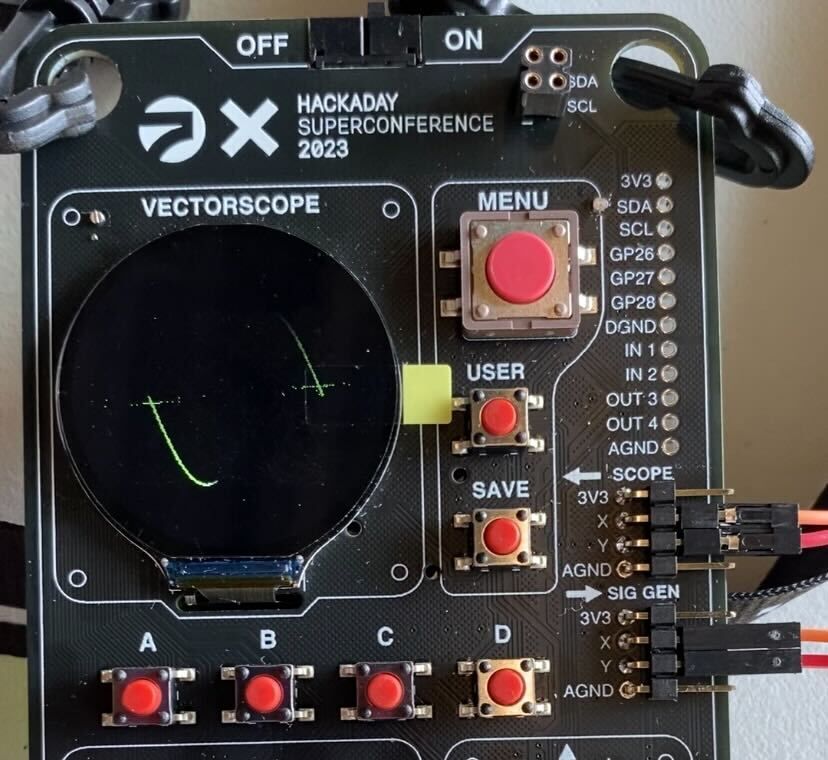
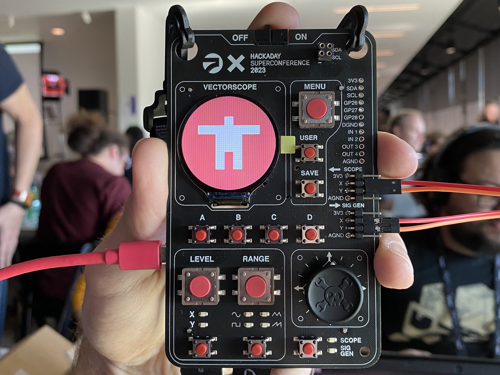

Just a few minutes after arriving at Hackaday Supercon 2023, I decided that I needed to document my experience. Working with two longtime Supercon veterans (they literally started the thing!), I had been adequately prepared for experiencing the event for the first time, but there is nothing quite like actually being there in-person. Even at 9 AM on Friday, the energy and activity was already bubbling. Despite not knowing many folks, or only knowing of them by their online presence, I felt as though I was attending a gathering of old friends.
After waiting in a short line to check-in, we were given our conference bag, and most importantly, our badge. The badge this year, named the Vectorscope, is based on the Raspberry Pi Pico, a board featuring the RP2040 microcontroller. The announcement post contained enough information for us to get started with some “pre-hacking” a few weeks ago (see post here), but actually having the badge in-hand allowed us to examine some of the finer details. The venue was full of rows of tables with power strips and soldering irons, and I settled in at one of them amidst a group of other folks who were already hard at work modifying the badge’s firmware and hardware. There was a talk at 11 AM detailing the badge’s architecture and behavior, but expectedly, no one was going to wait for that.
The first step to getting the badge working was to connect the signal generator pins to the scope pins via provided jumper wires. This loopback allowed for the pre-programmed Lissajous curves to dance on the small display.

Naturally, I was eager to play with the firmware and see what was possible. Nearly all of it was written in Micropython, and the source was available on the microcontroller itself. While use of the Thonny IDE was encouraged, I wanted to stay within my Neovim development environment, so I installed mpremote. After connecting the badge to my development machine over USB, I was immediately able to check out the filesystem.
$ mpremote fs ls
ls :
756 A.py
1438 B.py
756 C.py
756 D.py
6618 adc_reader.py
0 adr_reader.py
7131 aiorepl.py
3064 codec.py
414 colors.py
3377 dds.py
5448 dma_defs.py
2721 examples.py
2200 generate_wavetables.py
1860 joystick.py
4205 keyboardcb.py
6527 keyboardio.py
1078 keyleds.py
5074 lissajous.py
227 main.py
8661 menu.py
2812 menudemo.py
396 minimal_example.py
440 phosphor_gradient_14.py
947 pin_defs.py
3689 pio_code.py
728 pio_defs.py
0 pixel_push.py
12131 pixel_pusher.py
31246 pl_earth.jpg
18617 pl_jupiter.jpg
24023 pl_mars.jpg
21553 pl_mercury.jpg
25072 pl_moon.jpg
11984 pl_neptune.jpg
10831 pl_saturn.jpg
9284 pl_uranus.jpg
24232 pl_venus.jpg
3493 planets.py
587 random_walk.py
12789 romans.py
134144 scope.gif
2139 screen.py
3408 screennorm.py
1349 screentest.py
4260 sketch.py
1349 slideshow.py
14635 splash_7.jpg
16365 splash_wrencher.jpg
12630 splash_x.jpg
810 static_buffer_example.py
3411 supercon_menu.py
7848 timer.py
10912 vectoros.py
4175 vectorscope.py
25141 vga1_16x32.py
343 vos_debug.py
1348 vos_launch.py
556 vos_state.py
5904 waveform.py
I could then easily open any of the files in Neovim on my machine by setting it
as $EDITOR.
$ EDITOR=nvim mpremote edit pixel_pusher.py
This meant that I had language server support (I use
ruff-lsp for Python), as well as all
of my other Neovim shortcuts. Other than the Lissajous curves, there was also a
demo that displayed a slideshow of planets on the display. Wanting to show off
the new Golioth logo on my badge, I downloaded a PNG, and
resized it / converted to JPEG using
ImageMagick.
$ convert golioth.png -resize 240x240 golioth.jpg
From there, I copied the image over to the filesystem on the badge, then updated the slideshow images array with its path.
$ mpremote golioth.jpg :golioth.jpg
$ EDITOR=nvim mpremote edit planets.py
# comamnds for slides
TEXT=0
IMAGE=1
BACKGROUND=2
TEXTXY=3
slides=[
[ IMAGE, "golioth.jpg" ], # golioth logo
[ IMAGE, "pl_mercury.jpg" ],
[ IMAGE, "pl_venus.jpg" ],
[ IMAGE, "pl_earth.jpg" ],
[ IMAGE, "pl_moon.jpg" ],
[ IMAGE, "pl_mars.jpg" ],
[ IMAGE, "pl_jupiter.jpg" ],
[ IMAGE, "pl_saturn.jpg" ],
[ IMAGE, "pl_uranus.jpg" ],
[ IMAGE, "pl_neptune.jpg" ],
]
After doing so, I was able to display the logo on the screen, and I was ready to dig into some more complex projects that we had plannned. I spent most of the rest of the day just hacking and meeting new folks. The concentration of kind and interesting people was off the charts, and I ended up talking to a lot of folks who I had followed online for some time. We learned a ton while hacking on the badge, but ultimately are attempting a fairly complex demo, so we’ll see if we are able to have it all working by the showcase on Sunday night. I’ll include detail of some of the issues we are running into in the next update.

It is Saturday morning and the talks start in earnest today. I fully anticipate bouncing between high-quality presentations and my station at the badge hacking tables. If you’re at Supercon and want to meet, please feel free to come say hi or reach out via one the social links on the home page. See y’all tomorrow!